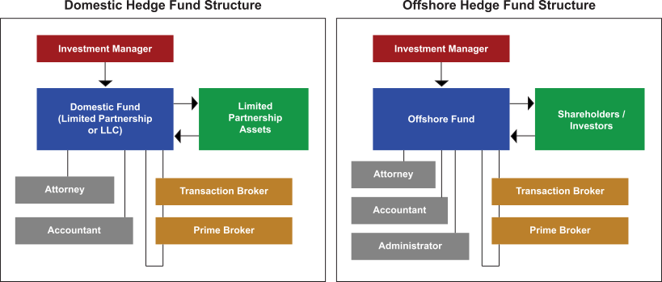

The following graphics provide more detail on the various parties involved in the structure of hedge funds, as well as the flow of funds and services between the interested parties. Click each box in the structures to learn more about the role each entity plays.
